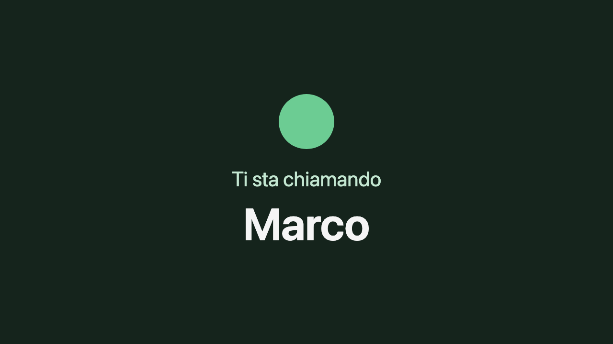
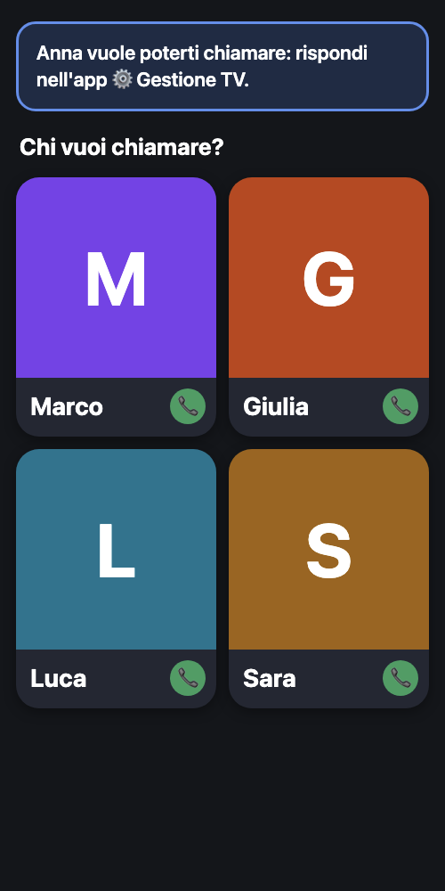
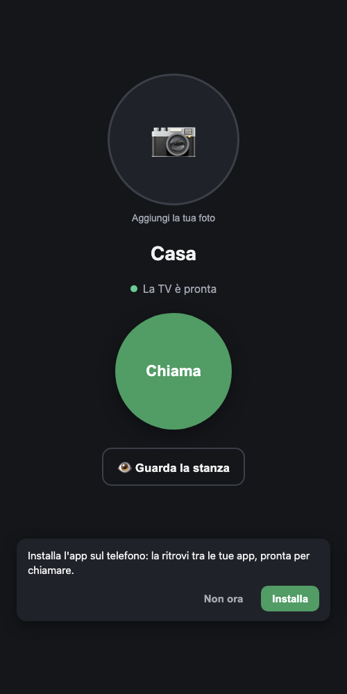
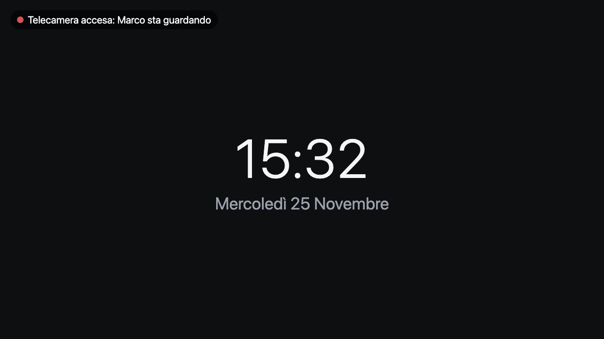

Prototipo in prova in casaPrototype in home testing
La TV che risponde da sola.The TV that answers by itself.
Una piccola scatola collegata alla TV dei tuoi genitori. Li chiami dal telefono: la TV si accende, squilla e la videochiamata parte. Loro non devono toccare niente. A small box plugged into your parents' TV. You call from your phone: the TV turns on, rings and the video call starts. They don't have to touch anything.

Come funzionaHow it works
Le videochiamate falliscono quando chi le riceve non sa usare un telefono o un tablet. Qui lo schermo è quello che usano già ogni giorno. Video calls fail when the person receiving them can't use a phone or a tablet. Here the screen is the one they already use every day.
-
Si collega alla TVIt plugs into the TV
Una scatolina con telecamera e microfono, collegata con un cavo HDMI. Resta sempre accesa.A small box with a camera and microphone, connected with an HDMI cable. It stays on all the time.
-
La famiglia ha un'appThe family gets an app
Ognuno riceve un link di invito e la installa sul telefono, senza passare dagli store. Il nonno o la nonna approva chi può chiamare.Each person gets an invite link and installs it on their phone, with no app store. Your parent approves who can call.
-
Chiami, la TV rispondeYou call, the TV answers
La TV si accende, passa all'ingresso giusto, dice chi chiama e apre la videochiamata. Riattacchi tu quando avete finito.The TV turns on, switches to the right input, says who is calling and opens the video call. You hang up when you are done.
Anche loro possono chiamare teThey can call you too
Sul telefono dei nonni c'è un'app con le facce grandi dei familiari. Basta toccarne una: il video va sulla TV, la voce resta sul telefono, così non c'è eco. Sul tuo telefono arriva una notifica che suona finché non rispondi. Your parent's phone has an app with big faces of the family. One tap is enough: the video goes to the TV and the voice stays on the phone, so there is no echo. Your phone gets a notification that keeps ringing until you answer.
Si può anche attivare la chiamata con il braccio alzato: tenendo un braccio sopra la testa davanti alla TV per qualche secondo, la TV chiama i familiari uno dopo l'altro. È una comodità, non un allarme. There is also an optional call by gesture: holding one arm above the head in front of the TV for a few seconds makes the TV call the family one after another. It's a convenience, not an alarm.


La privacy prima di tuttoPrivacy comes first
- Niente viene registrato: né audio né video.Nothing is recorded, neither audio nor video.
- Guardare la stanza è possibile solo se il nonno o la nonna lo permette, con un interruttore sul proprio telefono. Lo può spegnere quando vuole.Looking at the room is possible only if your parent allows it, with a switch on their own phone. They can turn it off at any time.
- Quando la telecamera è accesa, sulla TV compare sempre una scritta con il nome di chi guarda.Whenever the camera is on, the TV shows a sign with the name of who is looking.
- La chiamata con il braccio alzato analizza le immagini solo dentro la scatola: nessuna immagine esce di casa.The call by gesture analyses images only inside the box: no image leaves the house.

In arrivoComing next
Idee per le prossime versioni. Il questionario serve a capire quali contano davvero.Ideas for the next versions. The survey helps me find out which ones really matter.
Promemoria farmaciMedication reminders
Li imposti dall'app, compaiono a tutto schermo sulla TV e chi li riceve conferma con il telecomando.You set them in the app, they appear full screen on the TV and your parent confirms with the remote.
Turni e appuntamentiShifts and appointments
Un calendario condiviso per famiglia e badante: chi passa quando, chi accompagna alla visita medica.A shared calendar for the family and the carer: who visits when, who goes along to the doctor.
Foto e messaggiPhotos and messages
Le foto della famiglia sulla TV, come una cornice digitale, quando nessuno chiama.Family photos on the TV, like a digital frame, when nobody is calling.
Ti servirebbe?Would you use it?
Elder Care TV è un prototipo: funziona in una casa di prova. Prima di andare avanti voglio capire cosa serve davvero alle famiglie. Bastano cinque minuti. Elder Care TV is a prototype: it works in one test home. Before going further I want to understand what families really need. It takes five minutes.
Rispondi al questionarioTake the survey